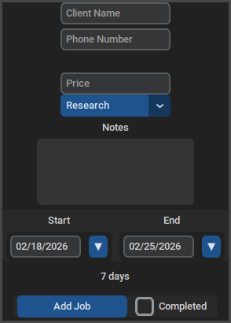
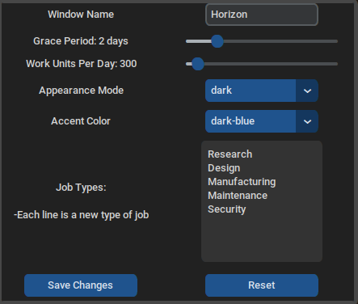
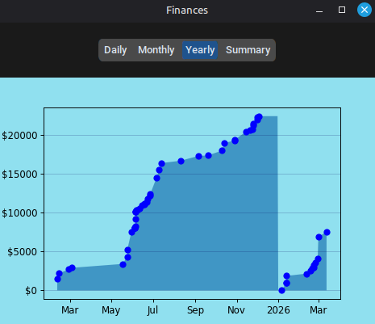

Horizon

Overview
Horizon is a lightweight Python GUI for keeping track of tasks and finances.
Horizon is designed for non-technical clients, so (once installed) all functionality is accessed entirely through the graphical interface.
Versioning system to automatically detect and update data from prior versions.
Debugging logs and data backups to help diagnose issues.
See the public GitHub repository for help setting up and running the program (link).

Streamlined Task Management
- Click on the chart to pull up the plotted job's info
- View autocomplete options for client name/phone numbers as you type
- Helpful notes for date data, such as the length of a job or if the job is past due but wasn't marked for completion yet

Customizable Options
Graphical interface (no muddling around with text files!) to access all options.- Grace period is the number of days the job is budgete to be finished ahead of it's stated due date (helpful to avoid going over the actual due date!)
- Work units describe how many work units (the rough effort needed to complete a job) your organization can fulfill per day
- Job types determine the presets the user has when updating a job's type

Finance View
Visualizations of income estimated from work-units.- Daily: Plots data per-job; approximates a "continuous" graph
- Monthly: More granular view
- Yearly: Default mode; provides a long-term view of cumulative yearly income
- Summary: Text display to get exact numbers for monthly/yearly income